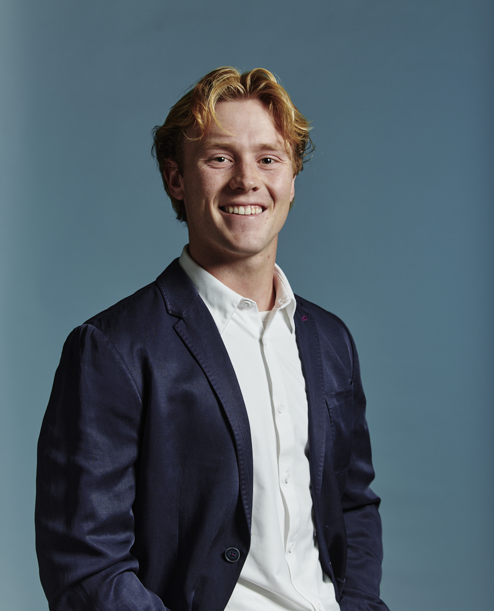

Finance, Investment and Banking — University of Wisconsin–Madison, May 2026
New York, NY · nickscott21@icloud.com · LinkedIn
I graduated from the University of Wisconsin–Madison in May 2026 with a BBA in Finance, Investment and Banking (GPA 3.78) and the Nathan S. Brand Award for Excellence in Finance. I like work where the analysis is the product — valuations and research that have to survive real questioning from people who know more than I do. Below is a selection of that work.
I led the M&A analysis for a pitchbook advising Brown-Forman on a potential sale to Pernod Ricard. I owned the valuation and deal structure: a synergy DCF valuing $200 million of run-rate cost savings at $2,881 million NPV ($6.27/share), accretion/dilution and contribution analyses, and a 60/39/1 stock, debt, and cash consideration mix that held pro forma net leverage to 4.8x while turning the deal from 8.7% dilutive to 2.1% accretive in year one. Our team defended the recommendation for an hour before a mock investment committee of working bankers and earned the Nathan S. Brand Award for Excellence in Finance.
View the pitchbook (PDF)In my final two weeks at WisdomTree, the European index team — then building a quantum computing index — asked me to answer a question they had been wrestling with: what threat does quantum computing actually pose to assets on the blockchain? The seven-page paper walks an investor audience from qubits and Shor's algorithm through what it would take to break RSA-2048, maps the specific exposure of Bitcoin and Ethereum, and lands on a barbell thesis: own crypto and the companies building quantum-safe infrastructure. It was published on WisdomTree's research blog with the launch of the WisdomTree Quantum Fund (WQTM).
Read the paper (PDF)I built six scenario-based equity models across European defense, rare earths, and consumer discretionary, laying out catalysts, sensitivities, and downside pathways for portfolio managers, and screened ~30 companies for thematic index inclusion and weighting. One modeled name, Lynas Rare Earths, was adopted into the GeoAlpha index.
Model files are WisdomTree property and not shared here.
I co-authored a 30-page equity research report on Starbucks with a four-method intrinsic value model — DCF, EVA, FCFE, and EBO — incorporating the Boyu Capital China JV as a pro-forma adjustment. We derived an $85 price target and presented a HOLD recommendation to the club, weighing China growth optionality against premium valuation and near-term margin pressure.
View the report (PDF)Our team worked with Trek to close the gap between its e-commerce traffic and its online conversion. I quantified a 48x online-to-in-store conversion gap from Trek's e-commerce data, studied the in-store playbook across retail visits, translated each tactic into a digital equivalent, and sized the annual opportunity at ~$21M off a 131,686-purchase baseline and $378 average order value.
View the presentation (PDF)Captain, Wisconsin Club Baseball. Two seasons as captain of a program ranked 8th nationally; 33-player roster, 20-7 overall record, regional playoff championship round. I introduced player-run captain's practices — lifts and skill sessions held without coaches — built on the idea that standards you keep when nobody's watching are the only ones that count.
Founder, TUPE Cannabis Committee. At 14, I founded a subdivision of a tobacco-prevention nonprofit to cover the gap the curriculum had on cannabis, building the material with input from two Stanford physicians. Nearly seven years later it's still running; I've delivered it to roughly 850 students across ~30 Marin County classrooms and was interviewed for the documentary Screenagers Under the Influence.